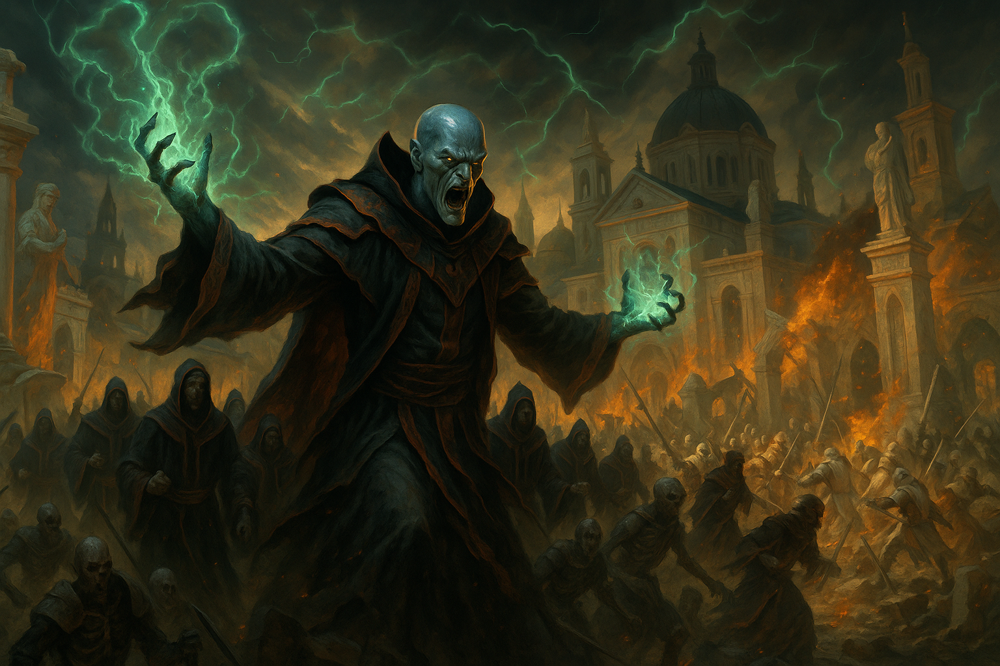

Die Erben der neuen Welt
Die Erben der neuen Welt ist ein in Eosphoros Jenseits aktiver Kult, der glaubt, dass die alten Götter versagt haben und ein neuer, stärkerer Gott nötig ist, der Freiheit schaffen kann. Der Kultführer, soll zu diesem neuen Gott aufsteigen. Der Kult versucht durch Rituale, Rekrutierung und die Herstellung magischer Artefakte an Macht zu gewinnen und befindet sich in ständigem Konflikt mit der Kirche der Ordnung.
Glauben und Ziel
Die Götter der alten Ordnung haben versagt. Sie haben es nicht vermocht, Frieden und Wohlstand für alle zu schaffen. Eosphoros Jenseits braucht einen neuen Gott, der stark ist und der für Freiheit sorgt. Der Kultführer ist der Auserwählte, der dazu bestimmt ist, dieser neue Gott zu werden.
Symbol
Dieses Symbol dient als zentrales Erkennungsmerkmal der Sekte und verkörpert ihre Identität und Ideologie. Es zeigt ein Auge im Zentrum, umgeben von einem halbkreisförmigen Sichelmond. Das Symbol wird genutzt, um wichtige Orte zu kennzeichnen, die Zugehörigkeit der Mitglieder zu betonen und eine visuelle Einheit innerhalb der Sekte zu schaffen. Gleichzeitig fungiert es als identitätsstiftendes Zeichen, ähnlich einer Flagge, das sowohl intern für Zusammenhalt sorgt als auch nach außen als Wiedererkennungsmerkmal dient.
Rituale

Blutrituale: Um den Kultführer Macht zu verleihen, opfern Adepten einen Teil ihres Blutes oder die hohen Priester opfern die gesamte Lebensenergie von Sündern. Dieses Ritual findet zu jedem Vollmond in der Kultstätte des Kults statt. Die hohen Priester lenken die Lebenskraft und die Kraft des Blutes in den Körper des Kultführers , um seine Macht und magischen Fähigkeiten zu erhöhen.
Initiationsritus: Um dem Kult beizutreten, müssen neue Mitglieder einen Initiationsritus durchlaufen. Hierfür muss etwas von hohem Wert geopfert werden, sei es Artefakte, Gold oder uralte Schriftrollen
Hierarchie
Kultführer: Der Spielercharakter ist der Anführer des Kults und wird als gottähnliches Wesen verehrt.
Hohe Priester: Die Hohen Priester sind die engsten Berater des Kultführers und leiten die Durchführung der Rituale.
Adepten: Die Adepten sind die gewöhnlichen Mitglieder des Kults. Sie führen die Aufgaben des Kults aus und verbreiten ihre Botschaft.
Gruß

Innerhalb des Kults gibt es einen Gruß.
Ein Mitglied begrüßt mit der Faust auf der Brust, um Stärke zu symbolisieren oder mit flacher Hand auf der Brust um Vertrauen in den neuen Gott zu symbolisieren.
Begrüßung
IMMER "Novus Ordo" (Neue Ordnung)
Antwort
Kultführer: "Aeternus Novus Manet" (Der Neue bleibt auf ewig)
Hohe Priester: "In Nomine Novus" (Im Namen des Neuen)
Adepten & Rest: "Spes Nova" (Neue Hoffnung)
Daraufhin KANN der Begrüßende auch noch antworten.
Aktivitäten
Rekrutierung: Der Kult rekrutiert ständig neue Mitglieder aus allen Bevölkerungsschichten von Eosphoros Jenseits.
Propaganda: Der Kult verbreitet ihre Botschaft durch Predigten, Flugschriften und andere Mittel.
Sabotage: Der Kult sabotiert die Aktivitäten der Kirche der Ordnung und anderer rivalisierender Gruppen.
Opfergaben: Der Kult sammelt Opfergaben für ihre Rituale und für die Unterstützung ihrer Mitglieder. Opfergaben sind meist Sünder, auf die ein Kopfgeld ausgesetzt war und die von dem Kult gefangen wurden. Aber auch Verräter oder Anhänger der Kirche der Ordnung kommen infrage.
Konflikt mit der Kirche der Ordnung
Die Kirche der Ordnung sieht den Kult als eine große Bedrohung für ihre Macht und Autorität. Die Kirche versucht, den Kult zu unterdrücken und ihre Mitglieder zu verfolgen.
Mögliche Verbündete
Die Söhne von Riley: Die Söhne von Riley könnten sich mit dem Kult verbünden, weil sie beide ein gemeinsames Ziel haben: die bestehende Ordnung zu stürzen.
Ziele
- Mögliche Verbündete finden und neue Adepten rekrutieren
- Herausfinden was der Schleier der Seele bewirkt
- Genug Macht erlangen, um als Patron für die Hohe Priester wirken zu können.
- Eine Armee an Untoten in der Kultstätte ansammeln und Orderly übernehmen
- Das Buch der Ordnung erlangen und unsterblich werden → Mit dem Artefakt fusionieren durch ein Ritual
- Zum Gott aufsteigen und die anderen Götter bezwingen